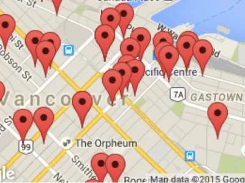

加拿大的私立语言ESL学校，这对很多中国家长不为熟知，是而事实上其教育行业里的一大风景，在多伦多、温哥华，私立语言学校是其代表性产业之一。每年甚至每个月来自世界各地的学生到私立语言学校进行短缺或长期英语语言培训。短则几周，长则一年不等。私立语言学校一般具有这样几个提点：
- 交通方便，一般集中在温哥华downtown地区，例如下图：
- 小班授课，一般不会多于15人，平均会在10人左右；
- 国籍混合宽泛：德国、瑞士、巴西、日本、韩国等等；
- 中国学生比例较少，语言环境较好；
- ESL梯度划分详细，甚至很多学校会划分到10个级别，因而，各种级别的学生，都可以被安排到与自己英文水平相当的级别而循序渐进的学习；
- 课程品种多样，从基本的ESL到商务英语，学科预备英语，雅思托福考试，以及单项听说读写能力的课程；
- General English
- Academic English/University Preparatory English
- Business English
- English for Specific Purpose (Medical/Legal/Technical etc.)
- Group Programs (English)
- Summer or Winter Activity or Camp Programs (English)
- Youth / Junior programs (English)
- Cambridge Test Preparation
- TOEFL Preparation
- TOEIC Preparation
- Other Programs (English)
- IELTS Preparation
- 教学严谨，教授大多为有经营，本科毕业，并具有教师资格证书；
- 课外活动丰富多彩。规模正式的语言学校不仅主抓英语，并以提供丰富多彩的课余和节假日活动来满足各国学生学习和运用英语的能力；
- 学习期限灵活，1周抑或1年，全日制或半日制，依据个人需求而定。
- 正规语言学校都会是language Canada, PCTIA的成员，并取得EQA的认证。

当然，选择语言学校也要慎重，如何选择安全、可靠、放心而有品质的语言学校？
SSC-Canada的顾问为为家长、学生、顾问提供免费的咨询，可以联系。
具有雅思IELTS课程的温哥华语言学校列表
（以下学校来自于2015年12月language Canada 搜索）
| Global Village English Centres – Vancouver 地址： 888 Cambie Street, Vancouver, V6B 2P6 British Columbia Canada Contact Homepage: http://www.gvenglish.com/ |
| Global College 地址: #298 – 1199 West Pender Street, Vancouver, V6E 2R1 British Columbia Canada Contact Homepage: http://www.gcc-canada.com/ |
| Eurocentres – Vancouver 地址: #250-815 West Hastings Street, Vancouver, V6C 1B4 British Columbia Canada Contact Homepage: http://www.languagecanada.com/ |
| Zoni Language Centers Vancouver 地址： #250-815 West Hastings Street, Vancouver, V6C 1B4 British Columbia Canada Contact Homepage: http://www.languagecanada.com/ |
| VGC Language School 地址： 411 West Hastings Street, Vancouver, V6B 1L4 British Columbia Canada Contact Homepage: http://www.vgc.ca |
| VanWest College – Vancouver 地址: #200 – 1016 Nelson St, Vancouver, V6E 1H8 British Columbia Canada Contact Homepage: http://www.vanwest.com/ |
| Vancouver International College of English 地址: 2nd Floor, 549 Howe Street, Vancouver, V6C 2C2 British Columbia Canada Contact Homepage: http://www.vicenglish.com |
| Vancouver English Centre 地址: 250 Smithe Street, Vancouver, V6B 1E7 British Columbia Canada Contact Homepage: http://en.vec.ca/ |
| EF International Language Schools (Canada) – Vancouver 地址: 929 Granville Street, 4th Floor, Vancouver, V6Z 1L3 British Columbia Canada Contact Homepage: http://www.ef.com/ca/contact/vancouver/ |
| EC Vancouver 地址: 570 Dunsmuir Street, Suite 200, Vancouver, V6B 1Y1 British Columbia Canada Contact Homepage: EC Vancouver |
| St. Giles International Vancouver 地址: 1130 West Pender Street (Suite 400), Vancouver, V6E 4A4 British Columbia Canada Contact Homepage: http://www.stgiles-international.com |
| OHC Vancouver (formerly Sol Schools – Vancouver) 地址: 322 Water Street, Unit 100, Vancouver, V6B 1B6 British Columbia Canada Contact Homepage: http://www.ohcenglish.com/school/VANCOUVER |
| SEC – Study English in Canada – Vancouver 地址: 549 Howe St, Vancouver, V6C 2C2 British Columbia Canada Contact Homepage: http://www.sec-canada.com |
| PGIC Vancouver 地址: 1155 Robson St., Vancouver, V6E 1B5 British Columbia Canada Contact Homepage: http://www.pgic.ca |
| Pera College 地址: 110 – 668 Seymour St, Vancouver, V6B 3K4 British Columbia Canada Contact Homepage: http://www.peracollege.ca |
| Canadian College of English Language (CCEL) 地址: #450-1050 Alberni St., Vancouver, V6E 1A3 British Columbia Canada Contact Homepage: http://www.canada-english.com/ |
| Language Studies International (LSI) Vancouver 地址: #101-808 Nelson Street, Vancouver, V6Z 2H2 British Columbia Canada Contact Homepage: http://www.lsi-canada.com |
| Canadian as a Second Language Institute (CSLI) 地址: 188 Nelson Street, Vancouver, V6B 6J8 British Columbia Canada Contact Homepage: V6B 6J8 |
| King George International College – Vancouver 地址: #201-1400 Robson St., Vancouver, V6G 1B9 British Columbia Canada Contact Homepage: http://www.kgic.ca |
| Brighton College 地址: 515 West Hastings, Vancouver, V6B 0B2 British Columbia Canada Contact Homepage: http://www.brightonesl.com/ |
| Kaplan International Vancouver 地址: Suite 300, 755 Burrard Street, Vancouver, V6Z 1X6 British Columbia Canada Contact Homepage: http://www.kaplaninternational.com/ |
| iTTTi Vancouver 地址: 605 Robson Street, 3rd Floor, Vancouver, V6B 5J3 British Columbia Canada Contact Homepage: http://www.ittti.ca/ |
| ITD Canada 地址: Suite 323, 1030 West Georgia street, Vancouver, V6E 2R1 British Columbia Canada Contact Homepage: http://www.itdcanada.ca |
| ISS Language and Career College of BC 地址: #501-333 Terminal Avenue, Vancouver, V6A 2L7 British Columbia Canada Contact Homepage: http://lcc.issbc.org/ |
| International Language Academy of Canada (ILAC) – Vancouver 地址: 1199 W. Pender, Unit 100, Vancouver, V6E 2R1 British Columbia Canada Contact Homepage: http://www.ilac.com/ |
| International House Vancouver 地址: Suite 2001 – 88 West Pender Street, Vancouver, V6B 6N9 British Columbia Canada Contact Homepage: http://www.ihvancouver.com/ |
| ILSC Language Schools – Vancouver 地址: 555 Richards Street Vancouver, Vancouver, V6B 2Z5 British Columbia Canada Contact Homepage: http://www.ilsc.ca/ilsc-vancouver.aspx |
| ILI Vancouver 地址: 549 Howe Street, 9th Floor, Vancouver, V6C 2C2 British Columbia Canada Contact Homepage: www.ili.ca |